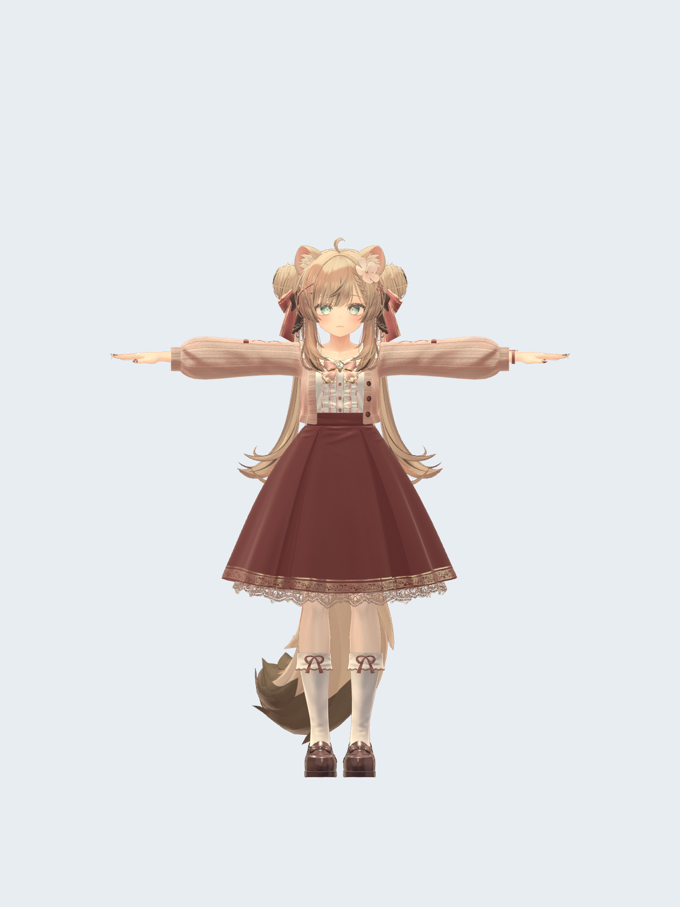
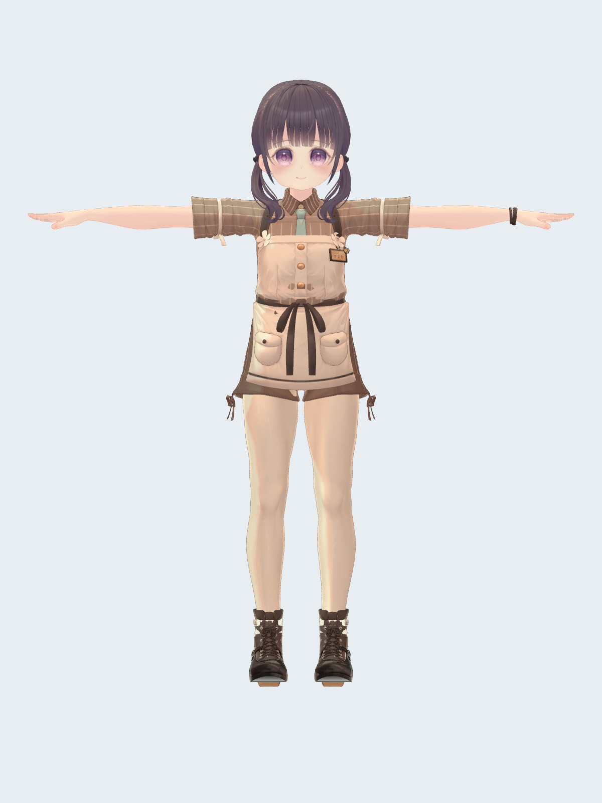
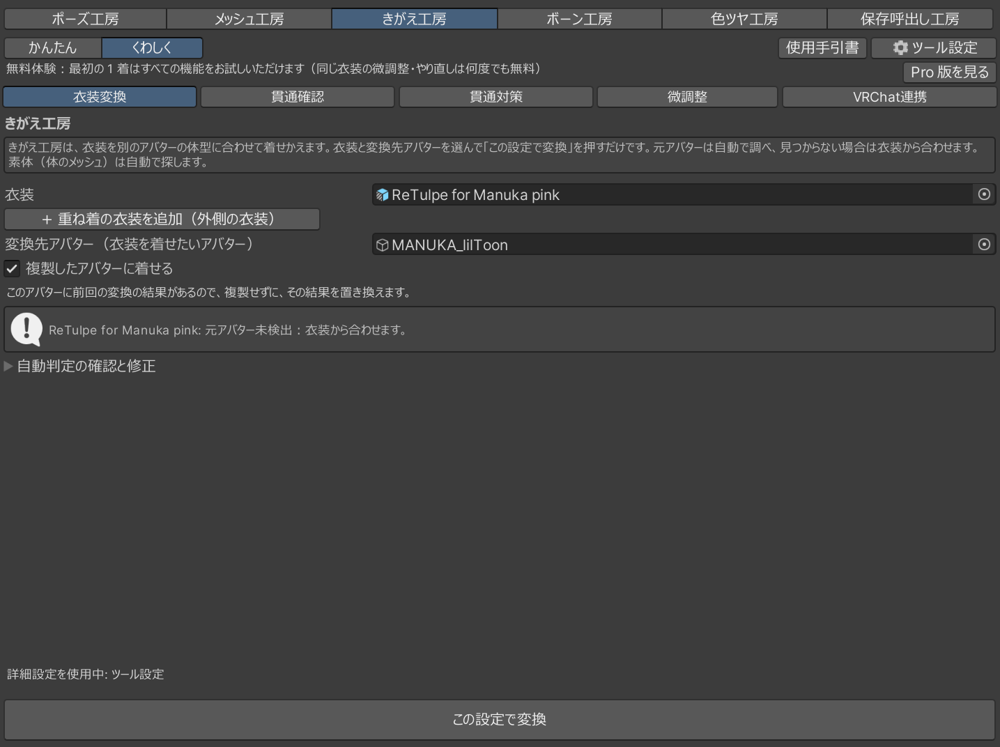
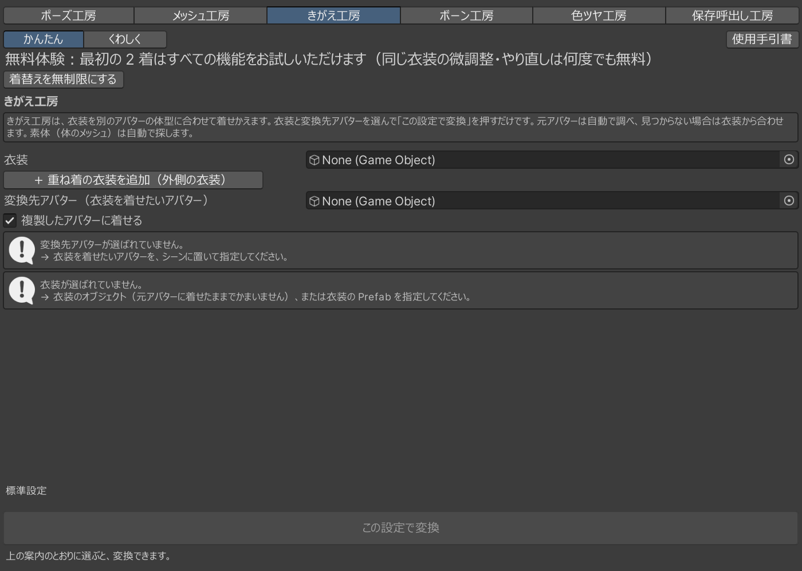
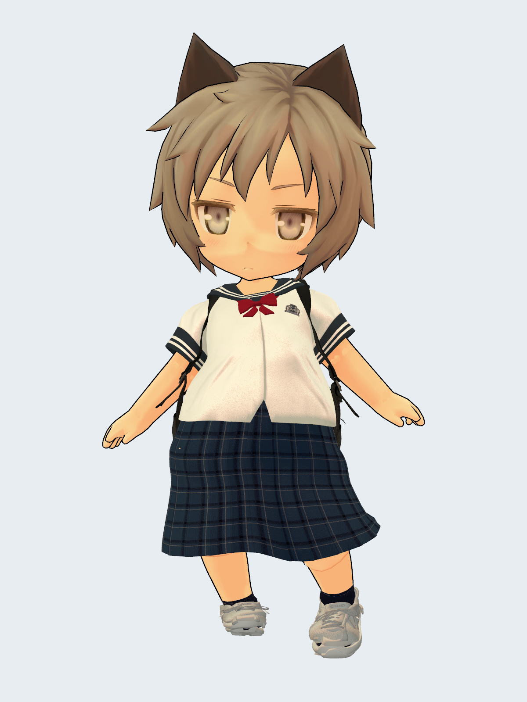
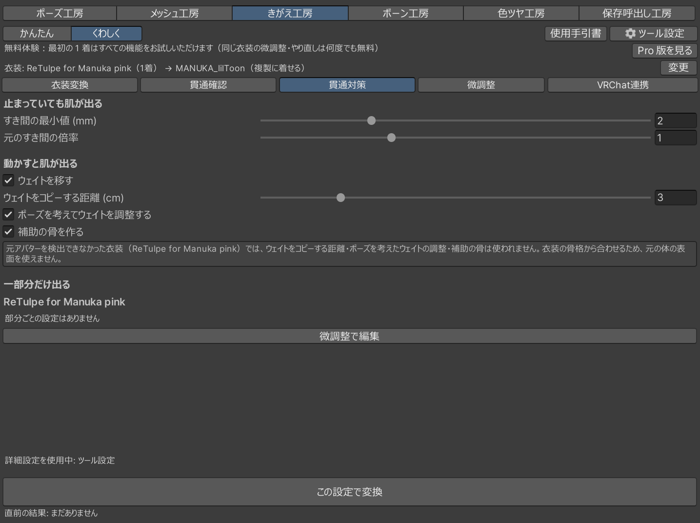
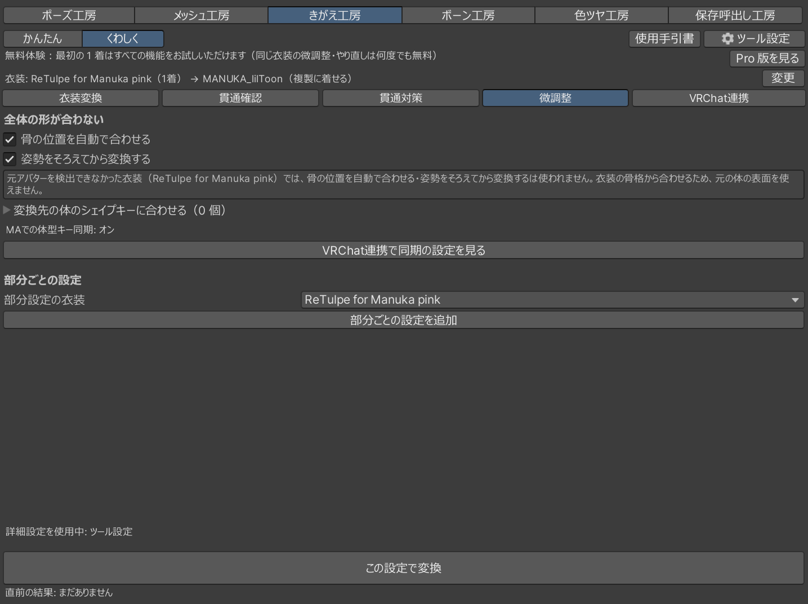
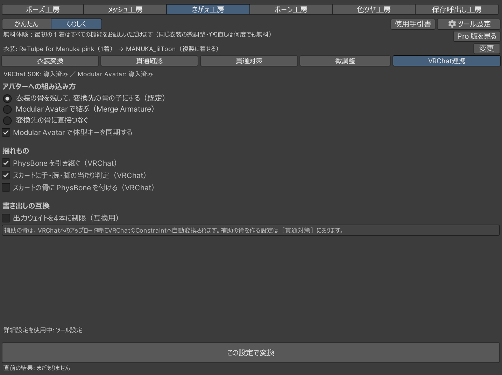
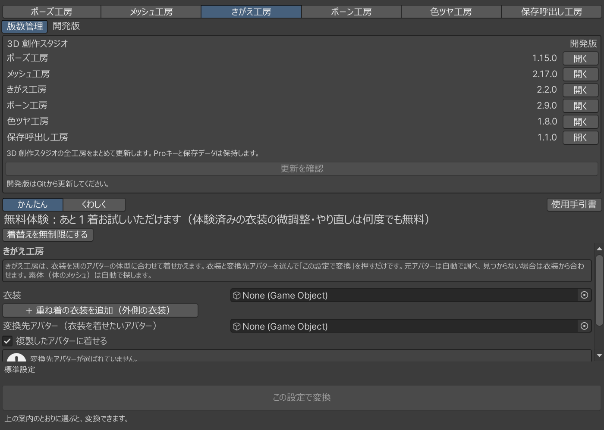

8ポーズ自動検査
＋ 座りスカート補助
貫通しやすい姿勢を見つける。元アバターを使う変換では、座ったときのスカートを支える補助ボーンも自動生成できます。
座った姿を整える →きがえ工房 / 3D 創作スタジオ 使用手引書
変換プロファイル不要。
元アバターがなくても、
骨付き衣装の Prefab から。
非対応の衣装を、自分のアバターへ。2組まで無料で。
自動変換から細部の調整、作業の保存まで、Unity の中でつながります。
貫通しやすい姿勢を見つける。元アバターを使う変換では、座ったときのスカートを支える補助ボーンも自動生成できます。
座った姿を整える →元アバターがあれば素体差分を使って精密に合わせ、なければ衣装を自動解析。変換プロファイルの追加購入は不要です。
衣装の選び方 →上部の工房切り替えから、無料同梱のメッシュ工房へ。残った食い込みや形を、Unity 内で調整します。
仕上げの流れ →シーンと対応工房の作業を保存呼出し工房へ。複数の案を残し、保存した状態へ戻れます。無料版は1スロット。
無料版とProを見る →衣装 ＋ 着せたいアバター
2026-11-09 に Unity で変換した作例です。標準設定から始めて、自動チェックと見た目を確認し、気になる場所を調整します。仕上がりは衣装・体型・姿勢によって変わります。


アバター・衣装は製品に同梱していません。素材の帰属はクレジットをご覧ください。同じ衣装セットと同じアバターなら、無料のまま何度でも調整できます。
はじめの1組
手持ちの衣装とアバターで始めましょう。変換プロファイルの準備は要りません。元アバターが手元にあれば、素体を使った変換に活用します。
BOOTH の無料ページで3D 創作スタジオを取得。Unity に本体の unitypackage を取り込み、一覧はすべてチェックしたまま［Import］します。
［Tools > Kigae Koubo > Open］を開きます。
入れ方を詳しく見る →［衣装］へ衣装の Prefab またはシーンの衣装を、［変換先アバター］へ Hierarchy のアバターを入れます。［この設定で変換］を押し、処理が終わるまで待ちます。

［Scene で見る］で仕上がりを確認します。食い込みが気になるときは、［貫通対策］ですき間を調整して再変換。［貫通確認］では8ポーズの結果を見られます。

画面上部で、無料体験の残り枠を確認できます。案内文の直下、左側にある［着替えを無制限にする］から Pro の販売ページを開けます。無料の2組は、購入せずにそのまま調整・再変換できます。

無料で確かめて、続きをPROで
3D 創作スタジオ Pro は買い切り ¥2,500。きがえ工房の3組目以降と、保存呼出し工房の2スロット目以降を、ひとつのキーで解放します。
FREE / 最初の1組を試す
¥0
PRO / 衣装と作業案を増やす
¥2,500 買い切り
| できること | 無料版 | Pro |
|---|---|---|
| 8ポーズ検査／元アバター利用時のスカート補助・素体転写 | 最初の2組で使える | 組数の制限なし |
| 衣装Prefab単体からの変換 | 最初の2組で使える | 組数の制限なし |
| 同じ組の再変換・調整 | 何度でも | 何度でも |
| 別衣装の追加・別アバターへの変換 | 2組まで。3組目から Pro | 使える |
| メッシュ工房など4工房 | 使える | 使える |
| 保存呼出し工房 | 1スロット | スロット数の制限なし |
Pro は利用枠を広げるものです。無料の2組で、使いたい衣装との相性や仕上がりを確認してから購入できます。保存容量はパソコンの空き容量に依存します。
3D_CreativeStudio_Pro_Key.zip をダウンロードし、展開します。3D_CreativeStudio_Pro_Key.unitypackage を開き、すべてチェックしたまま［Import］します。キーは Assets/Koubo_Pro に入ります。本体の更新時もこのフォルダを残してください。本体の版ごとにキーを取り直す必要はありません。キーを削除した場合は、購入済みファイルを再度 Import します。
もっときれいに仕上げる
最初からすべての設定を覚えなくても大丈夫です。形を見ながら、一つずつ試せます。見出しを押すと詳しい手順が開きます。
きがえ工房で再変換すると、メッシュ工房で調整した結果とは別の変換結果になることがあります。先にきがえ工房の設定を固めてから、細部を仕上げてください。
服のPrefabだけでも使えます。着せていない Prefab も、そのまま［衣装］の欄に入れられます。元アバターは、選びません。自動で調べます。見つからないときは、衣装から合わせます。このとき、［補助の骨を作る］は使われません。［ポーズを考えてウェイトを調整する］も同じです。骨の名前のつけ方が違っても、よくある名前なら、自動で合わせます。
先に、「はじめての練習」の手順 1・2・4 をやります。［衣装］の欄だけが、違います。練習の衣装が残っていたら、先に［この変換を取り除く］で取り除きます。
Project ウィンドウで、衣装の Prefab を探します。Prefab は、青い箱のアイコンです。
Prefab を、［衣装］の欄へドラッグします。［衣装］の案内が消えて、［この設定で変換］ボタンが使えます。

［この設定で変換］ボタンを押します。変換のあいだは、Unity が止まったように見えます。終わるまで、待ちます。
ヒエラルキーで、着せたいアバターの下を見ます。選んだ衣装の名前が分かる行が、できています。

Prefab がたくさんあって探しにくいときは、検索の欄が便利です。ドラッグできないときは、［衣装］の欄の右の丸いボタンで、Prefab を選べます。Prefab は、ヒエラルキーに置かなくてかまいません。できた衣装が見えないときは、着せたいアバターの左の ▶ を押すと、開きます。
元の Prefab のファイルも、アバターも、変わりません。できた衣装は、元の服のコピーです。中の並び方や、付いている設定は、残ります。変わるのは、形と、骨の位置と、ウェイトです。ウェイトは、衣装が、骨の動きにどれだけついていくかの割合です。補助の骨（スカートに脚が入りにくくなるように、足す骨）が増えることもあります。ほかの衣装も、同じやり方で着せられます。うまくいかなかったときは、すぐに Ctrl+Z を押します。取り消せます。
名前から、元のアバターと選んだ衣装が分かります。同じ名前の別のものがあるときだけ、見分ける印が付きます。
重ねて着せるときは、「重ね着の衣装を着せたい」の章を見ます。
欄を増やすと、衣装を重ねて着せられます。内側に着るものから、順に入れます。たとえば、内側がシャツで、外側が上着です。どちらも、同じアバター用の衣装を使います。元アバターは、衣装ごとに自動で調べます。外側のものは、内側のものに入り込まないように、合わせます。
先に、「はじめての練習」の手順 1・2・4 をやります。練習の衣装が残っていたら、先に［この変換を取り除く］で取り除きます。やることは、欄を増やして、ボタンを押すだけです。そのほかは、ふつうの変換と、同じです。
［＋ 重ね着の衣装を追加（外側の衣装）］ボタンを押します。［衣装］の欄が、2 つになります。「上の衣装から順に変換します」という案内が出ます。
［衣装 1（内側）］の欄に、内側に着るものをドラッグします。Prefab でも、元アバターが着ているものでも、かまいません。
［衣装 2（外側へ）］の欄に、外側に着るものをドラッグします。
［この設定で変換］ボタンを押します。終わるまで、待ちます。
ヒエラルキーで、着せたいアバターの下を見ます。着せた数だけ、衣装が増えています。
白いふきだしに「元アバター未検出」と出ても、エラーではありません。そのまま変換できます。
ドラッグできないときは、欄の右の丸いボタンから、選べます。衣装が見えないときは、着せたいアバターの左の ▶ を押すと、開きます。
欄を消したいときは、欄の右の［−］ボタンを押します。順番を入れかえるボタンは、ありません。入れかえたいときは、欄に入れ直します。空の欄は、とばされます。同じものを 2 つの欄に入れると、2 つ目は、とばされます。
「結果」の欄には、変換直後に行った自動チェックの数値要約が、衣装ごとに出ます。くわしくの［貫通確認］で、衣装ごとに場所も確かめられます。数値の読み方は「貫通の場所を確かめたい」をご覧ください。
できあがったら、シーンビューで、重なりぐあいが見られます。うまくいかなかったときは、すぐなら Ctrl+Z で取り消せます。うまくいかないときは、「はじめての練習」の章を見ます。
食い込みは、体が衣装から出てしまうことです。ぶかぶかは、衣装が体からはなれて見えることです。直すには、設定を変えて、もう一度変換します。すき間（体と衣装の間のあき）を、大きくしたり、小さくしたりします。やることは、スライダーを動かして、ボタンを押すだけです。1 回で決めなくてもかまいません。なんどでも、変換し直せます。
先に、変換を 1 回やって、結果を見ておきます。やり方は、「はじめての練習」にあります。
「結果」の欄の自動チェックと、シーンビューを見ます。食い込みは、自動チェックの黄色い三角で分かります。ぶかぶかは、数には出ません。見た目で、決めます。
食い込むときは、［すき間の最小値 (mm)］のスライダーを、右へ動かします。体と衣装の間に、あけるすき間が、大きくなります。
ぶかぶかのときは、［元のすき間の倍率］のスライダーを、左へ動かします。1 のときは、元アバターと同じすき間です。元アバターが見つからないときは、骨のまわりの幅を基準にした、ゆとりが変わります。
いまの自動チェックの数を、メモします。変換し直すと、前の数はなくなるためです。
もう一度、［この設定で変換］ボタンを押します。終わるまで、待ちます。

「結果」の欄の、衣装の行の右の文を見ます。前の結果と入れかわったという知らせが出ています。
「結果」の欄の新しい数と、メモした数を比べます。
手順 2 と 3 は、どちらか 1 つでかまいません。［すき間の最小値 (mm)］のめやすは、0 から数 mm です。まず、少しだけ動かして、ためします。動かしすぎると、衣装が体からはなれて見えます。ちょうどよいところは、衣装ごとにちがいます。ぴったりしすぎるときは、［元のすき間の倍率］を右へ動かします。スライダーは、数を打ちこんでも動かせます。
手順 6 の知らせは、「前回の結果を置き換えました」です。前の結果は、新しいものに置き換わります。うまくいかなかったときは、すぐなら Ctrl+Z で取り消せます。または、スライダーを元に戻して、もう一度変換します。
着せ終わると、自動チェックが出ます。どこが入ったかや、ポーズは、くわしくの［貫通確認］で見られます。
できた服の欄の［くわしく確認］を押します。くわしくの表示では［貫通確認へ］です。
［確認する衣装］から、見たい服を選びます。
［貫通を確認］を押します。Sceneに色が出ます。黄は浅いところ、赤は深いところです。
［体を縮めるシェイプキーを 0 として調べる］は、ふつうはオンです。2つのボタンで、同じ調べ方を使います。オフでは、縮めるキーを含む見た目の形で調べます。調べ方を変えたら、調べるボタンをもう一度押します。自動チェックは、服を合わせたときと同じです。
［ポーズで確認］を押します。8つのポーズの表が出ます。
ポーズの名前ごとに、入っている頂点の数、割合、最大の深さを読みます。下の行には、8ポーズの割合の平均が出ます。
表は、決まった8ポーズを調べた数です。元のアバターの姿勢は変えません。数の読み方も見ます。
［表示を消す］で、Sceneの色を消せます。色は、［貫通対策］へ移っても残ります。調べる服を変えるか、片付けるか、窓を閉じると消えます。
衣装が使う骨や体の参照が、着せたアバターの外を指していると、注意と［参照を直す］が出ます。参照と道筋が食い違うときも出ます。古い版で変換した衣装でも、ここで直せます。
［くわしく］の［貫通確認］を開き、［確認する衣装］を選びます。注意の件数と、指している先の例を読みます。
［参照を直す］を押します。変換先の骨や体など、対応する物へ付け替えます。対応する物やシェイプキーが無い行・部品は外します。外した行・部品は、名前とともに知らせます。
結果の件数と、外した物の名前を読みます。やり直すときは、Ctrl+Zを1回押すと戻せます。
腕を上げると脇から肌が出るときは、［貫通対策へ］です。［動かすと肌が出る］で直します。膝の先だけなら、［微調整へ］です。すき間や動き方の直し方に、どれを使うかが書いてあります。

体の中に、1 mm以上入った頂点を数えます。新しく増えた数と割合、いちばん深いところが出ます。元の服と比べられるときは、もともと入っていた分も出ます。
自動チェックのまとめには、新しく入ったところの平均が出ます。いちばん多いポーズの名前と割合も出ます。［貫通確認］には、ポーズごとの表があります。
表の数は、新しく増えた分と、もともと入っていた分です。割合と平均には、もともと入っていた分も含みます。自動チェックのまとめとは、数え方が違います。比べられなかったときは、わけが出ます。
腕と胴のように、体どうしが重なるポーズもあります。そのときのめり込みは残ります。体と服がひとつながりなら、服の下をおしはかって測ります。ほんとうの体とは違うため、数が少なく出ることもあります。
調べるのは、決まった8ポーズです。ほかの動きや、VRChatの中での揺れは含みません。
開き直したあとも、調べ直せます。［貫通を確認］や［ポーズで確認］を使います。自動チェックのまとめとは分けて読みます。どこが入ったかを見るやり方に続きます。
体と服が一体のアバターは、肌と服が、ひとつながりになっています。そのため、服だけを外すことができません。それでも、衣装を着せることはできます。きがえ工房が、服の下の体を、おしはかって合わせます。そのままでは、元の服が残って、できた衣装と重なって見えます。そこで、元の服を、ボタンで隠します。隠すだけで、元のファイルは変わりません。
先に、「はじめての練習」の手順 1 から 5 をやります。［変換先アバター（衣装を着せたいアバター）］には、体と服が一体のアバターを入れます。ここまでは、ふつうのアバターと、同じです。
黄色い三角の印の警告が出るので、読みます。服の下の体を、おしはかるという知らせです。体と服がひとつながりだからです。警告が出ても、そのまま変換することができます。
［この設定で変換］ボタンを押します。終わるまで、待ちます。
「結果」の欄の［変換先の元の服を隠す（Undoで戻す）］ボタンを押します。元の服が、見えなくなります。
シーンビューで、衣装を見ます。脚や腕も、服といっしょに、消えて見えることがあります。
脚や腕も見るなら、肌を出せます。［元の服を隠して仮の肌を表示（試験的・Undoで戻す）］を押します。肌色の胴や腕や脚が、仮に出てきます。この手順は、飛ばしてもかまいません。
元の服を隠しても、自動チェックのまとめは変わりません。仮の肌（元の服を隠したところに出す、肌の色の面）は見た目を確かめるためのものです。数えるときは、仮の肌を使いません。服を合わせるときに、おしはかった体を使います。
隠した直後なら、Ctrl+Z で戻せます。あとからなら、［元の服を表示に戻す］ボタンで戻せます。このボタンは、隠したときだけ、「結果」の欄に出ます。Unity を開き直したあとでも使えます。

衣装の一部だけ、変換のしかたを変えられます。これを、部分ごとの設定（一部だけ変える設定）と呼びます。手首の飾りのマテリアルを使います。その部分を、変換先の体型に合わせないようにします。骨の動きには、ついていきます。
先に、ウィンドウの 2 つの欄を埋めておきます。変換の前でも、後でもかまいません。設定は、次に［この設定で変換］を押したときから使われます。
シーンビューで、手首の飾りを押します。はじめは、アバターすべてが、オレンジ色のふちで囲まれます。飾りだけが囲まれたら、手順 2 はとばします。
もう一度、同じところを押します。飾りのパーツだけが、オレンジ色のふちで囲まれます。

インスペクターの［Materials］を見ます。

押すのは、できた衣装の飾りです。元の服の飾りでも、マテリアルの名前は同じです。
［Materials］は、Skinned Mesh Renderer の中にあります。閉じているときは、左の三角を押して開きます。並んだ名前が、そのパーツのマテリアルです。名前を覚えておきます。
ほかの服にも同じ名前があると、分けられません。そんなときは、「ブラシで塗って、場所を決めたい」の章へ進みます。
ウィンドウでもInspectorでも、同じ欄を使えます。ここで場所を決めないと、設定が衣装のすべてに効きます。
Prefabへ追加するときは、確認の窓が出ます。［Prefab に追加する］は、ファイルを変える操作です。Ctrl+Zでは戻せません。変えたくなければ［キャンセル］です。シーンに置いた衣装なら、Ctrl+Zで戻せます。
くわしくの［微調整］で、ここから始めます。
［部分ごとの設定を追加］を押します。［部分設定の衣装］には、ここで使う服が出ています。
［マテリアルで指定］にチェックを入れます。
［衣装のマテリアルから追加...］を押します。マテリアルの名前の一覧が出ます。

一覧から、調べた名前のマテリアルを選びます。［マテリアル］の欄に入ります。「Element 0」は、1 つ目という意味です。

［変換の効き具合を指定］にチェックを入れます。スライダーが出ます。
［効き具合］が 0 になっていることを確かめます。

0 でないときは、スライダーを左の端まで動かします。0 の部分は、変換先の体型に合わせません。1 なら、ふつうに合わせます。
ウィンドウの［この設定で変換］を押します。
シーンビューで、手首の飾りを見ます。元アバターで着ていたときと同じ形なら、できています。

前に変換していれば、その結果と入れかわります。練習で隠した服は、隠れたままです。見くらべるには、かたほうのアバターを、名前の左のチェックで隠します。
ほかの設定は、「部分ごとの設定（Inspector）」の章にあります。
うまくいかないときは、「困ったとき」を見てください。
専用のマテリアルが無い部分は、ブラシで塗って決められます。ブラシ（なぞって塗るもの）は、シーンビュー（3D の景色を見るウィンドウ）で使います。マスク画像（白と黒で、選ぶところを示した絵）でも、決められます。
先に、「一部だけ、形を変えたくない」の「部分を決めます」で、設定を追加しておきます。衣装は、シーンに置いたものを使います。
［ブラシで指定］にチェックを入れます。
［塗るメッシュ］から、衣装のメッシュ（体や服の形そのもの）を選びます。
［ブラシで塗る］を押します。シーンビューの左上に、小窓が出ます。

シーンビューで、衣装の上を左ドラッグします。なぞったところが、赤く光ります。
消すときは、Shift+左ドラッグです。
終わったら、［ブラシを終了］を押します。

小窓の［半径 (cm)］で、ブラシの大きさを変えます。［強さ］で、塗りの濃さを変えます。塗った頂点（形を作る点）の数は、「選んだ頂点: N / M」に出ます。Ctrl+Z で、塗る前に戻せます。ここまでが、ブラシの使いかたです。
ほかの服やタブへ移ると、ブラシは終わります。塗った値は残ります。Alt を押しながらドラッグすると、塗らずに、見る向きを変えられます。
ブラシとは別のやり方です。どちらか 1 つで、場所を決められます。
［マスク画像で指定］にチェックを入れます。
［マスク画像］の欄に、画像を入れます。
［対象の色］で、［白い所］か［黒い所］を選びます。

画像は、衣装の UV（絵を形にはるための地図）に合わせて作ります。png か jpg なら、そのまま使えます。画像を読めないときは、その部分はここで使うものになりません。これで、場所が決まります。
そのあとは、「一部だけ、形を変えたくない」の「何を変えるかを決めます」から続けます。
うまくいかないときは、「困ったとき」を見てください。
シェイプキー（形を変える設定）で、体の形を変えられます。たとえば、胸の大きさです。選んだキーと同じ名前のキーを、衣装にも作れます。体のキーを先に見ておきます。
くわしくの［微調整］を開きます。
体のシェイプキーの折りたたみを開きます。「変換先の体のシェイプキーに合わせる」で始まる欄です。（ ）の中の数は、チェックしたキーの数です。
合わせたいキーに、チェックを入れます。キーの名前は、アバターごとに違います。
ウィンドウの［この設定で変換］を押します。終わるまで、待ちます。
［なし］を押すと、チェックがすべて外れます。［すべて］を押すと、すべてにチェックが入ります。チェックしなくても、衣装の近くの体を動かすキーは、自動で作られます。体を縮めるキーは、除きます。
ヒエラルキーで、着せ直した衣装の中のメッシュを選びます。メッシュは、体や服の形そのものです。
インスペクター（ものの設定が出るウィンドウ）で、［BlendShapes］を開きます。
変換先の体と同じ名前のキーが、並びます。これで、キーが衣装にも作られました。
うまくいかないときは、「困ったとき」を見てください。
座ると、スカートに脚が入ることがあります。そのために、補助の骨（スカートに脚が入りにくくなるように、足す骨）を作れます。骨は、動きのもとになるところです。はじめから、オンになっています。
くわしくの［貫通対策］を開きます。
［ポーズを考えてウェイトを調整する］に、チェックが入っているか見ます。
［補助の骨を作る］も、同じように見ます。
ウィンドウの［この設定で変換］を押します。
ウェイトは、衣装が、骨の動きにどれだけついていくかの割合です。補助の骨を作ると、「変換の途中で気づいた点」に、次の文が出ます。補助の骨 N 本に Rotation Constraint を付けました（…）。
補助の骨には、Rotation Constraint（ほかの骨の回転につられて動くパーツ）が付きます。この文が出ないときは、補助の骨は作られていません。
自動チェックは8ポーズを調べます。平均や、最も多いポーズが出ます。くわしくの［貫通確認］で、［ポーズで確認］を押すと、「座り」などのポーズごとの数をくらべられます。場所とポーズの確認に、画像つきの手順があります。
うまくいかないときは、「困ったとき」を見てください。
くわしくの［VRChat連携］で決めます。VRChat SDKやModular Avatarが無くても、タブは出ます。入っているかどうかは、上の案内で分かります。無くても、衣装の変換はできます。
くわしくの［VRChat連携］を開きます。
「アバターへの組み込み方」から、1つ選びます。
必要な揺れものの項目に、チェックを入れます。
［この設定で変換］を押します。
はじめは、次の項目です。［衣装の骨を残して、変換先の骨の子にする（既定）］です。衣装の骨を残して、体について動くようにします。このときは、［Modular Avatar で体型キーを同期する］を選べます。
［Modular Avatar で結ぶ（Merge Armature）］は、衣装のArmature（骨をまとめたもの）を残して結びます。体と服のキーは、一緒に動きます。オフにはできません。Modular Avatarが無いと選べません。

［変換先の骨に直接つなぐ］では、体と服のキーをそろえるしくみは、使いません。
「揺れもの」の3つの項目を使います。衣装にあるPhysBoneを引き継ぐ項目は、はじめはオンです。手・腕・脚で布を押す項目もオンです。PhysBoneが無いスカートに付ける項目だけ、はじめはオフです。
着せたら、お知らせを読みます。「変換の途中で気づいた点」という欄です。数と内容は、衣装によって変わります。各欄の意味は、VRChat連携の画面説明にあります。
PhysBone とコライダーを引き継いだら、再生モードで揺れ方を確認します。コライダーを追加するとコンポーネント数も変わります。アップロード前に［VRChat SDK > Show Control Panel］でビルドとアバターの情報を確認してください。
元の服とアバターのデータは、そのまま残ります。すぐに戻すやり方と、あとで外すやり方があります。
着せたすぐあとなら、Ctrl+Zでまとめて戻せます。あとで服を隠したときは、そちらから順に戻ります。Ctrl+Yでやり直せます。
くわしくの［貫通確認］で、［確認する衣装］を選びます。
「結果の管理」の［この変換を取り除く］を押します。
服と、アバターに足した骨などをまとめて外します。できた服の欄や、服のInspectorにも同じボタンがあります。いちばんあとに着せた服なら、自動で隠れた元の服も戻ります。自分でチェックを外した服は、チェックを入れ直します。
同じシーンで、ウィンドウを開き直します。［Tools > Kigae Koubo > Open］です。いちばんあとに入れた服や値が戻ります。まだ着せていない値も、Unityを閉じるまでは残ります。
ほかの服を直すときは、Hierarchyでその服を選びます。シーンを開き直したときも同じです。服のInspectorで［この衣装の調整を再開］を押します。工房にある同じ名前のボタンも使えます。服や値を確かめます。直したい値を変えてから、［この設定で変換］を押します。続きから始めるだけでは、服は変わりません。
着せた服には、使った値を残します。シーンを保存しておけば、開き直しても使えます。まとめて着せた服なら、入れた並びも戻ります。
古い版で着せた服には、値が残っていないことがあります。そのときは、はじめの値を使うと出ます。元の服などを消していたら、空の欄へ入れ直します。
［貫通確認］の［確認する衣装］で、残したい服を選びます。
［変換し直しても残す］にチェックを入れます。
変えたい値を変えます。すき間なら［貫通対策］です。
［この設定で変換］を押します。
残すチェックが無いと、前の服は置き換わります。手で直したところも消えます。チェックがあると、新しい服が別にできます。重なるので、比べるときは片方を隠します。服のInspectorでも、同じチェックを使えます。
シーンを保存すると、服もその値も残ります。開き直したあとの数は、［貫通確認］で調べ直します。ファイルの片付けは別のやり方です。
変換すると、メッシュ（体や服の形そのもの）などのファイルができます。ファイルは、［保存先フォルダ］に入ります。はじめの保存先は、Assets/GP12_KigaeKoubo_Converted です。きがえ工房の本体フォルダの外にあるので、入れ直しても消えません。
使われなくなったファイルは、自動で片付きます。今すぐ片付けることもできます。
くわしくの［⚙ツール設定］に、「変換で作ったファイルの片付け」があります。その下の［使われなくなった、変換で作ったファイルを自動で片付ける］が、自動の片付けです。
はじめから、チェックが入っています。変換のたびと、Unity を起動したときに、片付けます。起動のときに調べるのは、はじめの保存先だけです。どのシーンからも使われていないファイルだけを、消します。今回の起動で作ったファイルは、次の起動まで残します。Ctrl+Z で戻ることがあるからです。
自動の片付けとは別のやり方です。この手順で消したファイルは、Ctrl+Z でも戻りません。
［いま片付ける...］を押します。

確認の窓の文を読みます。

［削除する］か、［キャンセル］を押します。
窓に、消すファイルの数が出ます。消すものが無いときは、「片付ける、変換で作ったファイルはありません」と出ます。そのときは、［OK］を押します。
今回の起動で作った、使われていないファイルがあると、ボタンが 3 つになります。3 つ目は、［Undo の履歴も消して片付ける］です。それも、消せます。ただし、Undo の履歴が、すべて消えます。
うまくいかないときは、「困ったとき」を見てください。
変換先を別のアバターへ変える操作は、無料体験で登録された組とは別の組です。2組目までは無料、3組目から Pro で利用できます。
一度着せた服も、次のアバターへ移せます。たとえば、AからBへ着せた服を、BからCへ移すやり方です。
［衣装］に、できた服を入れます。中のパーツだけではありません。服をまとめている、一番上の行を使います。
［変換先アバター（衣装を着せたいアバター）］に、次のアバターを入れます。
［この設定で変換］を押します。
前のアバターの骨は、次へは持っていきません。ただし、前のアバターには、服の骨が残ることがあります。そんなときは、「結果」の欄に、取りのぞき方が出ます。
前のアバターでその服を使わなければ、前の服の記録を使います。Hierarchyで前の服を選びます。Inspectorの［この変換を取り除く］で取り除けます。次に着せた服と取り違えないようにします。
一度合わせた形を、さらに合わせるやり方です。AからCへそのまま着せた形とは、少し違うことがあります。見た目をもう一度確かめます。
必要なときに読む辞書
入れ方から詳しい設定まで。以前の手引書のリンクから来た場合も、該当する項目が開きます。
Unity をはじめて使う人のための章です。この手引書で使う操作だけを書きます。知っている人は、「入れ方」へ進んでください。
プロジェクト（Unity で作業するフォルダ）は、Unity Hub から開きます。Unity Hub は、Unity を起動するアプリです。左の「Projects」に、プロジェクトが並びます。名前を押すと、そのプロジェクトで Unity が開きます。アバターを入れてあるプロジェクトを使います。
新しく作るときは、Unity Hub の「New project」を押します。版は 2022.3.22f1 を選びます。一覧に無いときは、左の「Installs」で、その版を入れます。ひな形は、「3D」のものを選びます。
買ったアバターは、unitypackage（Unity に入れるファイル）で配られます。入れ方は、「入れ方」の「Unity に入れる」と同じです。アバターの説明書があるときは、その手順にしたがいます。
入れると、Project ウィンドウに Prefab が増えます。何個もあるときは、説明書に書いてある物を使います。書いていなければ、名前がアバターの名前の物を使います。
はじめの並び方では、次の場所にあります。
ウィンドウを閉じてしまっても、だいじょうぶです。メニューの［Window > General］から出せます。シーンビューなら、［Window > General > Scene］です。
ヒエラルキーで、アバターの行を見つけます。左の三角を押して、中を開きます。置き方は、「はじめての練習」の手順 1 にあります。中の行を 1 つずつ押して、シーンビューのふちを見ます。ふちが服だけに付く行があれば、別のパーツです。体と服が、いつもいっしょに囲まれるなら、一体です。
Ctrl+Z を押すと、さいごの操作から 1 つずつ取り消します。Ctrl+Y を押すと、取り消した操作が戻ります。きがえ工房の操作にも、効きます。
この手引書は、Windows のキーで書いています。Mac では、Ctrl キーは command キーです。Ctrl+Y は command+shift+Z です。F2 キーは Enter キーです。
きがえ工房は「3D 創作スタジオ」に同梱されています。無料の本体パッケージを、アバターを編集する Unity プロジェクトに取り込みます。
3D_CreativeStudio_vX_Y_Z.unitypackage を使います。X・Y・Z は版数です。変換結果の保存先は Assets/GP12_KigaeKoubo_Converted です。製品本体と別の場所に保存されます。
Unity 2022.3.22f1 を基準とする手順です。VRChat SDK と Modular Avatar は、対応する連携機能を使うときに必要です。衣装とアバターが指定するシェーダーなども先に導入してください。
画面写真は撮影時点の表示例です。版によって配置や文言が変わることがあります。
変換結果の GP12_KigaeKoubo_Converted、保存呼出し工房の GP25_HozonKoubo_DataFile、Proキーの Assets/Koubo_Pro は残してください。本体の更新に合わせて Proキーを買い直す必要はありません。
元アバター（衣装がもともと合っているアバター）が着ている衣装を、着せたいアバターに着せます。選ぶのは、［衣装］と［変換先アバター（衣装を着せたいアバター）］の 2 つです。この練習では、元アバターをまるごと入れます。体や顔や髪は、移しません。
まず、アバターを 2 体用意します。どちらも、Humanoid（人型の骨の設定）のアバターを使います。元アバターは、体と服が別のものを使います。Humanoid でないときは、ウィンドウに案内が出ます。
アバターの Prefab は、Project ウィンドウにあります。青い箱の印が付いた、アバターの名前のファイルです。選び方は、「Unity の基本の操作」にあります。
はじめは、［複製したアバターに着せる］がオンです。Bのコピーを作って着せます。元のBは隠れます。この練習では、コピーしたBを見ます。
ウィンドウがヒエラルキーにかぶったら、上の帯でずらせます。入りきらないときは、ホイールで上下に動かせます。
2 体の Prefab を、1 体ずつヒエラルキーへドラッグします。2 体は、重なって見えることがあります。

メニューバーの［Tools > Kigae Koubo > Open］を選びます。ウィンドウが出ます。白いふきだしの案内が 2 つ出て、［この設定で変換］ボタンは灰色です。まだ何も入っていないためです。

元アバターの一番上の行を、［衣装］へドラッグします。着ている服をまとめて移せます。
1着だけ移したいときの、服の見分け方は、「Unity の基本の操作」にあります。
ヒエラルキーの着せたいアバターを、［変換先アバター（衣装を着せたいアバター）］の欄へドラッグします。2 つの案内が消えて、［この設定で変換］ボタンが使えます。
白いふきだしに「元アバターを検出」と出たか見ます。
［この設定で変換］を押します。値はそのままでかまいません。進み具合の窓が、2 回続けて出ます。変換と、自動チェックです。消えるまで、Unity は動かせません。処理が終わるまで待ちます。所要時間は衣装の構成やパソコンによって変わります。
着せ終わると、コピーしたアバターの下に、衣装の行が増えます。名前から、元のアバターと選んだ衣装が分かります。同じ名前の別のものがあるときだけ、見分ける印が付きます。
「結果」の欄に、「変換しました」と出たか確かめます。「結果」の欄は、ウィンドウの下の方にあります。これで、変換できています。
服の見分け方は、「Unity の基本の操作」にあります。
まとめて選ぶには、Ctrl キーを押したまま、行を 1 つずつ押します。灰色の行は、はじめから隠れています。ふちは見えず、選ばなくてかまいません。できた衣装の名前と変換先アバターを、結果の案内とHierarchyで照合します。
ヒエラルキーで、コピーしたアバターを開きます。そのすぐ下の、もとの服の行を選びます。できた衣装の行と、その中の行は、ふくめません。
インスペクターで、名前の左のチェックを外します。もとの服が見えなくなります。複数あるときは、名前の欄が「—」になり、右に数が出ます。数は、選んだ服によって変わります。

ヒエラルキーで、できた衣装の行をダブルクリックします。シーンビューが、衣装に寄ります。着せたいアバターが、元の服を着ていれば、できあがりです。
変換先のもとの服が重なるときは、前の手順で非表示にしてから確認します。
続きは、「練習の結果を見る・取り消す」にあります。
「はじめての練習」のあとに読む章です。自動チェックを見ると、戻し方です。
自動チェックは、「結果」の欄に出ます。体に入り込むところが増えたか調べます。印のちがいで、次のように読みます。
肌が出ていなくても、数が出ることがあります。まずは目で見て確かめます。
値は、衣装や設定で変わります。元の服と比べられるときは、元から体に入っていた分も出ます。
場所の見方は、「貫通の場所を確かめたい」にあります。すき間の変え方は、「食い込みやぶかぶかを直したい」にあります。
うまく着せられると、入れた元の服はひとりでに隠れます。データは消えません。Hierarchyの灰色の衣装を選ぶと、Inspectorにチェックが出ます。名前の左のチェックで、また見えるようになります。最後に着せた服を取り除いたときも戻ります。隠れたままでも、［衣装］に選んで着せ直せます。
これは、着せたいアバターが、もともと着ていた服とは違います。そちらが重なるときは、練習の手順8・9で隠します。［複製したアバターに着せる］では、コピー前のアバターも隠れます。
Ctrl+Z は、さいごの操作から 1 つずつ取り消します。着せたすぐあとなら、1 回で、まとめて取り消されます。そのあとで服を選んだり、隠したりしたときは、そちらから順に戻ります。服を隠していれば、その服が先に戻ります。1 回ずつ押して、衣装の行を見ます。できた衣装が消えたら、止めます。2 体は、そのままです。
Ctrl+Y を押すと、取り消したものが戻ります。ウィンドウの「結果」は、戻りません。
写真は、着せたすぐあとのHierarchyです。取り消すと、この衣装の行が消えます。
［この変換を取り除く］を使うときは、「取り消したい・変換し直したい」にあります。自分でチェックを外して隠した服は、これでは戻りません。名前の左のチェックを、自分で入れなおします。
服のPrefabを着せたいときは、「衣装の Prefab を着せたい」を見ます。
上と下のボタンは、スクロールしても残ります。タブを変えても、入れた服や値はそのままです。切り替えるだけでは、着せ直しません。
［標準設定］なら、はじめの値です。［詳細設定を使用中］なら、変えてあるタブ名が出ます。かんたんに戻しても、その値を使います。
［設定を変更済み・結果には未反映］は、まだ着せ直していない印です。［設定を見る］で、変えた欄へ戻れます。［この設定で変換］で、服を着せ直します。
ほかのタブでは、下に［直前の結果］も出ます。うまくいったか、気をつけることがあるか分かります。［貫通確認へ］で調べられます。

はじめて開くと、こう見えます。服とアバターを入れて、下のボタンで着せます。重ね着もできます。
体や骨がうまく合わないと、［くわしくの衣装変換で直す］が出ます。このボタンで、直すところへ行けます。
白いふきだしは、お知らせです。空の欄も知らせます。黄色は、気をつけることです。赤いエラーが出ると、下のボタンを押せません。「→」のあとに、直し方が出ます。
うまく着せられたかと、自動チェックが出ます。はじめてなら「新規」と出ます。着せ直したときは、前の服と入れかわったことも知らせます。
［Sceneで見る］で、できた服へカメラが寄ります。重ね着なら、まとめて映します。［くわしく確認］で、［貫通確認］へ進みます。［この変換を取り除く］で、服と足した骨などを取り除けます。
着せ終わると、元の服は見えなくなります。戻し方は、練習の続きにあります。
服を入れる欄は、かんたんと同じです。できたあとの［くわしく確認］は、ここでは［貫通確認へ］です。
ふだんは閉じています。体や骨のお知らせがあると、開いて出ます。骨がうまく合わないと出たら、ここで直します。
［変換先の元の服を隠す（Undoで戻す）］で、もとの服を隠せます。［元の服を隠して仮の肌を表示（試験的・Undoで戻す）］では、肌も出せます。隠したあとは、［元の服を表示に戻す］で戻せます。
入力に使った服を隠すしくみとは、別です。体と服がひとつながりのときのやり方を先に読みます。
できた服を調べるタブです。服の形を直すタブではありません。8つのポーズで調べた数を表でくらべられます。
衣装の参照が変換先の外を指すと、注意と［参照を直す］が出ます。参照を直す手順で、付け替えと、外した物の知らせを確かめます。Ctrl+Zで戻せます。
［貫通対策へ］では、すき間や動き方を直せます。一部だけなら［微調整へ］へ進みます。
［変換し直しても残す］なら、前の服と見くらべられます。［この変換を取り除く］で、服と足した骨などを取り除けます。Inspectorの記録にも、同じボタンがあります。
服が無ければ、［衣装変換へ］で戻れます。場所と数を見るやり方も読みます。
肌が出るところを減らすタブです。値を変えたら、［この設定で変換］で着せ直します。そのあと、［貫通確認］で見直します。

調べたことがあれば、上にまとめが出ます。止まった姿と、8ポーズの数が分かります。新しい値で着せたときの数ではありません。
元アバターが無いときは、下の3つは使いません。ウェイトを移さないときも、コピーする距離は使いません。使わない理由が出ても、値は残ります。
部分ごとのすき間も、一覧で見られます。名前と幅、使うかどうかが出ます。ここでは変えられません。膝の先だけなら、［微調整で編集］へ進みます。
服の形を整えるタブです。変えた値は、次に着せ直すときから使います。

［部分設定の衣装］で、服を選びます。まだ無ければ、［部分ごとの設定を追加］で足せます。いくつもあれば、［編集する設定の場所］で選べます。親に付けたものは、その下の服にも使います。
ここに出る欄は、Inspectorと同じです。マテリアルやブラシなどで、変えたいところを決めます。すき間や動き方を、そこだけ変えられます。各欄の説明に続きます。
Prefabへ足すと、ファイルが変わります。［Prefab に追加する］で進めます。Ctrl+Zでは戻せません。やめるなら［キャンセル］です。ブラシは、服やタブを変えると終わります。塗ったものは残ります。
骨のつなぎ方と、揺れものを決めます。上の案内で、SDKとModular Avatarがあるか分かります。

この3つは、SDKがあるときだけ出ます。揺れ幅は再生モードで確認し、衣装に合わせて調整します。
［出力ウェイトを4本に制限（互換用）］は、できた服だけを4本に絞ります。元のメッシュは変えません。オフなら5本目からも残します。動かした形が変わることがあります。
補助の骨は、VRChatへ載せるとき、自動でConstraintに変わります。作りたいときは、［貫通対策］を使います。
くわしくの右上で、開いたり閉じたりできます。前に見ていたタブや、選んだ服はそのままです。
［保存先フォルダ］は、できたファイルを入れる場所です。はじめは Assets/GP12_KigaeKoubo_Converted です。
［使われなくなった、変換で作ったファイルを自動で片付ける］なら、自動で消せます。今すぐなら［いま片付ける...］です。消す数を見て、［削除する］で進めます。やめるなら［キャンセル］です。
［Undo の履歴も消して片付ける］では、Ctrl+Zで戻れる操作も無くなります。消したファイルは戻りません。先に片付けのやり方を読みます。
古い記録があるときだけ出るボタンです。［変換前のメッシュ工房設定を整理］で、残っている古い設定を片付けます。出ている注意を読んでから使います。
プログラムから使う人のための欄です。止まっているか動いているかが分かります。［開始］で動かし、［停止］で止めます。動いているときは、つなぐ先のURLも出ます。つなぐための秘密の値は出ません。
スクリプトを読み直すと、止まります。Playに入るときや、Unityを閉じるときも同じです。ふつうにウィンドウを使うなら、止めたままでかまいません。
［設定を既定値に戻す］で、着せ方をはじめの値へ戻せます。［保存先フォルダ］は、そのままです。
同じ欄を、［微調整］でもInspectorでも使えます。やり方は「一部だけ、形を変えたくない」をご覧ください。
Hierarchyで服や、その親を選びます。
Inspectorの［Add Component］で足します。名前は「きがえ工房 > Cloth Mask」です。

体験済みの衣装セットと、変換先アバターを選んでいるか確認してください。別衣装の追加・差し替えや別アバターへの変換は別の組となり、3組目から Pro が必要です。元の衣装の複製や別ファイルへの差し替えで識別が変わることもあります。元の変換記録の［この衣装の調整を再開］から戻ってみてください。
使用済みの1組は引き継がれ、もう1組を無料で試せます。体験記録を削除する必要はありません。
成功前の失敗では無料枠を消費しません。入力や表示された案内を確認して、同じ設定からやり直してください。
本体が Proキー対応版か確認し、Assets/Koubo_Pro/KouboProLicense.bytes が取り込まれているか見ます。キーの内容は編集せず、購入済みパッケージを再度 Import してください。
無料版の利用枠に戻ります。2つ目以降のスロットの呼び出しなどは Pro が必要です。保存済みライブラリは削除せずに残し、キーを再度取り込んでください。
まず、ウィンドウの赤や黄色の案内を読みます。「→」のあとに、直し方があります。

この手引書の言葉を、まとめました。わからない言葉が出たら、ここでさがします。すべて、おぼえなくてもかまいません。はじめて出たところにも、かっこで書いてあります。かっこの中が、その言葉のいみです。ブラウザで、ことばをさがすこともできます。
ウィンドウがどこにあるかは、「Unity の基本の操作」にあります。
VRChat で使わないときは、ここは、とばしてかまいません。
方式ごとに準備するものが違います。他製品の機能は製品ごとに異なるため、次の表は方式の説明です。
| 方法 | 準備と進め方 |
|---|---|
| Blender などで手作業 | 形やウェイトを自分で編集して合わせる。部位ごとに細かく作り込めます。 |
| 変換プロファイルを使う方式 | 対象アバターの組み合わせに合った変換データを用意します。対応範囲は使う製品とデータを確認します。 |
| 押し出しを中心に調整する方式 | 面の位置やすき間を調整します。骨や動きの扱いは製品ごとに確認します。 |
| 元アバターの素体を使う方式 | 元と変換先の素体を用意し、体型の違いを変換に使います。 |
| きがえ工房 | 元アバターがあれば素体転写、なければ衣装 Prefab の解析を使います。変換プロファイルを用意する必要はありません。変換後は検査と各工房で仕上げます。 |
衣装と変換先アバターを選びます。元アバターは自動で探し、見つからないときは衣装そのものから合わせます。素体や骨の判定に案内が出たら、入力欄から修正できます。
元アバターがあるときは、元と変換先の素体の違いを衣装へ転写します。体とのすき間、体型キー、部分ごとの設定を使って仕上がりを調整できます。

変換後は静止状態と8つのポーズを自動チェックします。元からある貫通と変換で増えた貫通を分けて読み、気になるポーズと場所を確認できます。数値は仕上げる場所を探す目安です。
素体からのウェイト転写とポーズを考えた調整に加え、座ったときのスカートを支える補助ボーンを生成できます。頭の飾りなどは、形を保つ調整も使えます。
体と服が一体になった変換先では、服の下の体を推定して合わせます。元の服を隠す操作もあります。仮の肌は試験的な見た目確認用で、元の肌の形や質感を復元するものではありません。
マテリアル、マスク画像、Scene ビューのブラシで範囲を選び、変換の効き具合やすき間を部分ごとに設定できます。
PhysBone とコライダーの設定を引き継ぎ、変換先への参照を整えます。Modular Avatar がある環境では、対応する組み込み方を選べます。揺れ幅や接触の見た目は、使用する衣装で調整します。
変換結果には作業の記録が残ります。［この衣装の調整を再開］から設定を見直せます。衣装を外すときは［この変換を取り除く］を使います。複数の作業案を残すときは保存呼出し工房を使えます。
変換結果は衣装・体型・姿勢の組み合わせで変わります。対応する入力と調整が必要なケースを、仕様と制限にまとめています。
食い込み、座ったときのスカート、飾りの形、シェイプキーの連動など、気になるところに合わせてレシピを選べます。
本手引書の作例・画面写真には、次の素材を利用しています。アバター・衣装のデータは製品に同梱していません。権利はそれぞれの作者に帰属します。
変換した衣装を使用・共有する際は、アバターと衣装それぞれの利用規約に従ってください。本製品の購入で、素材を再配布する権利が追加されることはありません。
ゆうこの画像は、ユニティちゃんライセンス条項に従って使用しています。ゆうこのモデルデータは製品に同梱していません。
次は、あなたの衣装で。
工房名が並ぶ最上段のすぐ下に、左側に［版数管理］、その右隣りに更新状態があります。6工房のどこからでも使えます。［版数管理］で、スタジオと6工房の導入版の一覧を開閉します。編集モードは切り替わりません。
確認前は［更新を確認］、通信に失敗した場合は理由と［再確認］が表示されます。版数一覧の［更新を確認］からも調べられます。自動確認はポーズ工房の設定を引き継ぎ、どの工房からも1日1回を目安に行います。通信できないときも工房の編集は使えます。
画像は開発環境のため［開発版］と表示されています。Gitクローンは配布物で上書きせずGitから更新します。Packages版はPackage ManagerまたはVCCから更新します。
